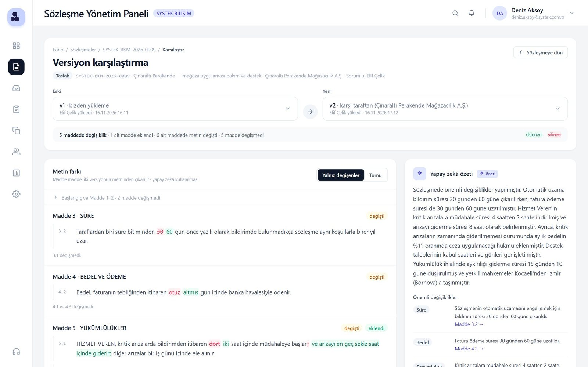

Ana sayfa / Hazırlık ve müzakere
Hazırlık ve müzakere
Sözleşmeler alıştığınız Word'de hazırlanır; karşı tarafın değişiklikleri madde madde görünür.
Sözleşme tek tıkla bilgisayarınızdaki Word'de açılır; indirip yeniden yüklemek gerekmez. Kaydettiğiniz değişiklikler doğrudan sisteme gider, Word'ü kapattığınızda yeni versiyon olarak saklanır. Aynı anda tek kişi düzenler, ötekiler kimin düzenlediğini görür; değişiklik izleme açık ve kilitlidir, değişiklikleri sorumlu kabul ya da reddeder.
Sözleşme kurumun kendi Word şablonundan üretilir, karşı taraftan gelen Word ya da PDF olarak yüklenir veya daha önce imzalanmış bir nüsha olarak kaydedilir. Eski arşiv toplu aktarımla tek seferde içeri alınır; tarih, taraf ve bedel gibi alanlar belgeden önerilir.
Eski versiyonlar silinmez. Karşı tarafın gönderdiği düzeltmeler yüklendiğinde iki versiyon arasındaki fark madde madde çıkarılır; yapay zekâ özeti önemli değişiklikleri ilgili maddeye bağlar.
Hukuk birimi ya da kurum dışından bir danışman, sözleşmeye görüş vermesi için davet edilir. Dış kişi uygulamaya girmeden, kişiye özel bir bağlantıyla yalnız kendisine gönderilen versiyonu görür.
Hazırlık ve müzakerede neler var
- Tek tıkla masaüstü Word'de düzenleme
- Her kayıt otomatik versiyon
- Kilitli değişiklik izleme
- Şablondan sözleşme üretimi
- Word / PDF belge yükleme
- İmzalı sözleşme kaydı
- Toplu arşiv aktarımı
- Madde madde versiyon karşılaştırma
- Yapay zekâ değişiklik özeti
- İç ve dış görüş

Diğer özellikler
Demo isteyin,
size ulaşalım
Formu doldurun; birkaç gerçek sözleşmeniz ve bir onay akışınızla çalışan bir deneme ortamı için sizinle iletişime geçelim.
Yeniköy Merkez Mah. Vatan Cad.
Teknopark Sitesi No: 83/A C26
Başiskele / Kocaeli